24 марта, суббота, шаббат
Встали рано, с настроем много проехать, но фортуна явно этого не желала. Буквально на первых метрах прокалываю колесо. Как назло, оно быстро спускает в самом начале длинного спуска. В итоге пробиваю подспущенную камеру об острый камень - получаю еще и "змеиный укус". Начало дня не очень. Ставлю большую заплатку на камеру, и продолжаем путь.
Буквально через 300 метров выезжаем к кемпграунду. Хорошо, что мы вчера не стали ехать сюда, место оказалось занято сотней-другой скаутов. Похоже в Израиле очень популярны детские пешие выходы на природу, особенно в Пейсах.
Сегодня дорога немного лучше, чем вчера. Отдельные участки очень рыхлого песка сменяются более крупной галькой, но ехать получается только рядом с дорогой, так как после машин все становится очень рыхлым и не проезжаемым, даже на наших широких колесах.
Швиль неплохо размечен. Встречается трехцветная бело-сине-оранжевая (цвета румынского флага) разметка, общая для всего Швиля. Кроме того участок до Тимны размечен еще и местным веломаршрутом.
Рыхлая дорога
Несмотря на это, в разметке присутствует некоторая бестолковость. Есть совершенно прямые участки, где разметка через каждые 50 метров, а на некоторых развилках приходится пройти 200 метров после поворота, пока встретишь маркировку.
Помогает заранее приготовленный трек.
Один из вариантов разметки
Вот и Тимна. Красивое место. Саломоновы столбы, каменные грибы, разноцветные пески. . . все это мы методично объезжаем и фотографируем. Интересно, но очень много людей. Автобусы подходят один за другим, высаживают людей у каждого интересного объекта.
Приятно, что на велосипедах по парку все равно перемешаться удобнее. За равное время мы осмотрели раза в три больше, чем автобусные туристы.
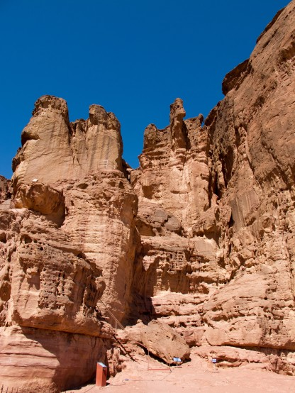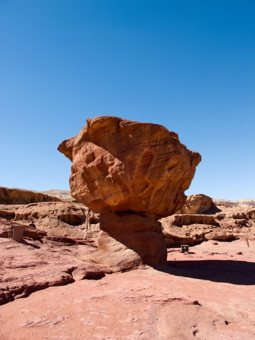
Саломоновы столбы и грибы
На выезде из парка разметка Швиля уходит вдоль унылой грунтовки. Дальше по плану длинный и плоский участок вдоль огромных военных полигонов, причем практически параллельно шоссе. Если поехать по нему, то до самого интересного района кратеров можно и не успеть за оставшиеся дни, тем более что Андрею улетать раньше.
Решаем подкинуться на автобусе. Перед выездом на дорогу не удержались и заехали в рощу памело. Урожай уже собран, но на земле оставлено огромное количество фруктов. Наверное, не прошли по размеру, при этом вполне съедобные и вкусные. Не без удовольствия перекусили ими и выехали на автобусную остановку на 90 трассе. Нас интересовал автобус до Мицпе-Рамона, но выяснилось, что такие автобусы здесь не ходят. Решили ехать вдоль 90 трассы, благо параллельно идет дорожка сельхозназначения.
Через несколько километров спускает заклеенное утром колесо. Большие "Змеиные укусы" вообще плохо клеятся, а если при этом покрышка 2.4 а камера на 2.1 то вероятность успеха очень мала. Странно, что оно продержалось целый день. Пытаюсь поменять заплатку, но укус расходится еще шире - теперь только менять камеру. Ставлю многократно заклеенную. Все больше запасок у нас нет, это не очень хорошо.
На выезде из парка
Заезжаем на заправку, набираем воды, перекусываем молоком и хлебом. Тем временем темнеет. 90 трасса очень загружена и ехать по ней неприятно, но других вариантов у нас нет. Поэтому решаем проскочить этот неприятный участок по темноте и холодку.
Поворачиваем на 40 дорогу и едем до упора. Упор наступает в местечке со странным названием перекресток Шизофон. Отползаем в эвкалиптовую рощу у дороги, ставим палатку и засыпаем даже без ужина. Очень устали. При установке палатки я не заметил, что звенья дуги не полностью соединились и в результате оно из них треснуло. Но это мы обнаружим уже утром.
Дневной пробег 82, 2 км, набор высоты 1090 метров
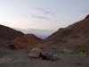 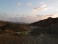 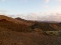 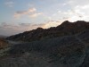 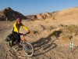 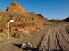 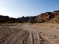 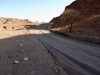 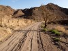 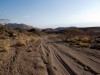 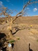 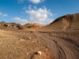 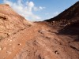 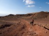 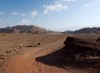 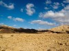 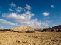 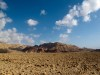 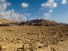 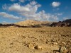 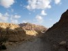 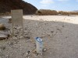 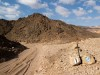 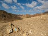 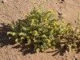 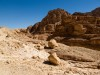 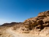 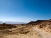 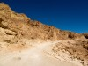 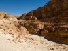 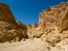 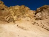 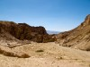 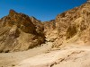 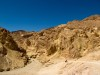 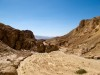 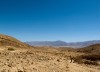 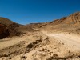 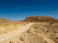 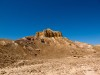 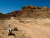 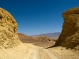 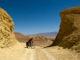  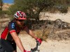 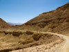
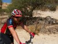 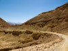  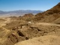
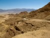  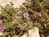
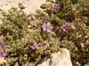